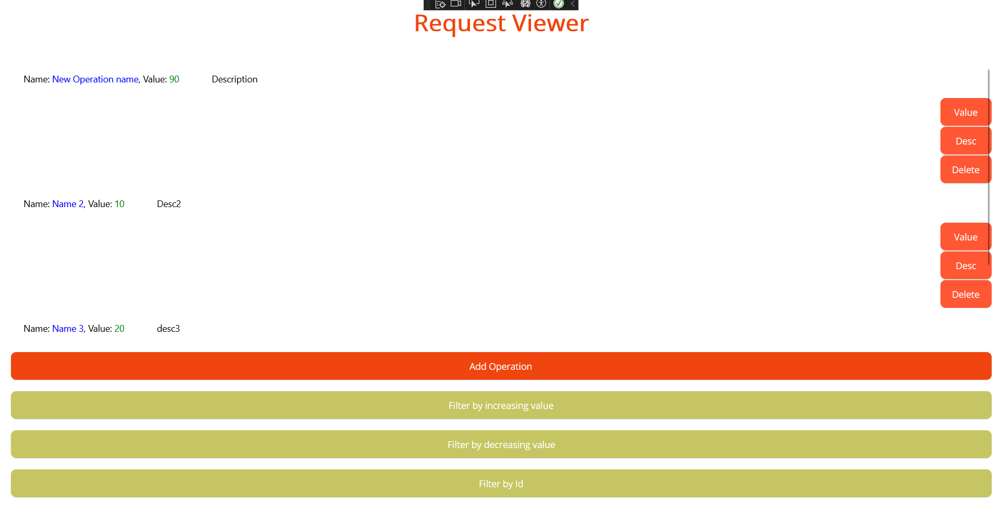

This week I took a task that was posted under week 9's series. It had no description and no required features so I had to invent what would be the effective solution for the title of the task: "As an UNDAC Disaster Management Coordinator, I want to record the actual time and resources used by operations so that overall resource use can be tracked and optimised". From what we've done before, I noticed 2 major things I have to do: track and optimise. The "item" I that will be created is an operation and we will be able to categorise it by it's value so that we're able to take optimal choices and put optimal efforts in it.
Here is the class model for the operation. As simple as it looks, the only thing that matters is that the "item" can be described and that it's priority or weight can be quantified. In the making of such quantifiable variable I've used an integer called Value.
using SQLite;
namespace UNDAC_App.Models
{
public class Operation
{
[PrimaryKey, AutoIncrement]
public int Id { get; set; }
public string Name { get; set; }
public int Value { get; set; }
public string Description { get; set; }
}
}
While creating the function that creates an operation, I was confronted with the issue of how to manage the value. What should the value be? We can't, from just a description, attribute a value variable. So I've came to the conclusion that the value has to be typed in, leaving the responsibility of quantifying the weight of the operation to it's creator. I've chosen to set the lowest value to 1, being minimal resources required, to 100, being maximal resources required. It also reflects on the code as it is capped here.
private async void AddOp(object sender, EventArgs e)
{
var name = await DisplayPromptAsync("Operation", "Please enter name: ");
var desc = await DisplayPromptAsync("Operation", "Please enter description of the resources used: ");
var valueString = await DisplayPromptAsync("Operation", "Please enter the value for the resource used. The bigger the score, the more important the operation will be considered (will cap at 100)");
int value = int.Parse(valueString);
if(value < 1)
{
value = 1;
} else if (value > 100)
{
value = 100;
}
if (!string.IsNullOrWhiteSpace(name))
{
opManager.AddOperation(name, value, desc);
OpList.Clear();
foreach (var op in opManager.GetAllOp())
{
OpList.Add(op);
}
}
}
(Note that the previous code doesn't refrain the user to enter non-number strings. This is what has been noticed after code review.)
The resources required for the operations have to be tracked. I have implemented a way to keep track of the value of each operation by sorting them by increasing or decreasing weight. This is the best way I have been able to track how important an operation is.
We are also able to return to the id sorting, as it will return to the order of origin, from the oldest to newest.
private void SortByDecreasingValue(object sender, EventArgs e)
{
OpList = new ObservableCollection<Operation>(OpList.OrderByDescending(op => op.Value));
OpListView.ItemsSource = OpList;
}
private void SortByIncreasingValue(object sender, EventArgs e)
{
OpList = new ObservableCollection<Operation>(OpList.OrderBy(op => op.Value));
OpListView.ItemsSource = OpList;
}
private void SortById(object sender, EventArgs e)
{
OpList = new ObservableCollection<Operation>(OpList.OrderBy(op => op.Id));
OpListView.ItemsSource = OpList;
}
Here is a screenshot of the user interface. There are 3 buttons assigned to each operation created, letting the user modify either the value or the description and deleting the item. The 4 remaining buttons are here to sort the operations and create them.

Link to the code review done for my code
As stated before, there is an issue with the reception of the value information. It can be nominal and if so will crash the system. there are other ways to get only numbers and therefore shall be used instead.
Their code is clean and follows the good code practice we used for the module. If I had to find the little something, it would be that this type of page might need a sort option, to make it easier to visualise.
Working on a new issue with 0 information has it's good and it's bad. I am totally free to interpret the issue but I have no idea if what I am doing answers the issue or if I am missing the point. While it can be disturbing, I think it's also part of the job to come up with solutions when it isn't written in the requirements.